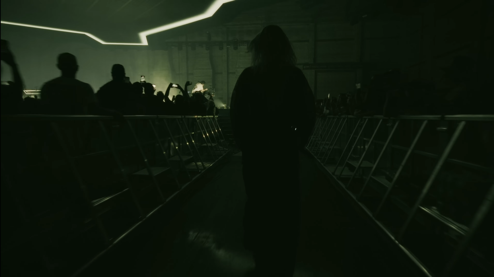

A live blog where I will keep a collection of my personal favourite, wallpaper-worthy media.

Emily’s Entrance in one of the live versions of LP’s new hit: The Emptiness Machine. This was the first time in a decade I binged-listened to LP again, and I’m so happy they truly found a successor. Ghost Whisperer by Eva Charkiewicz, taken from here. Somehow this picture always intrigued me in ways I cannot describe. You can interpret this however you like, but I am mostly reminded of one’s overthing self.
Ghost Whisperer by Eva Charkiewicz, taken from here. Somehow this picture always intrigued me in ways I cannot describe. You can interpret this however you like, but I am mostly reminded of one’s overthing self.